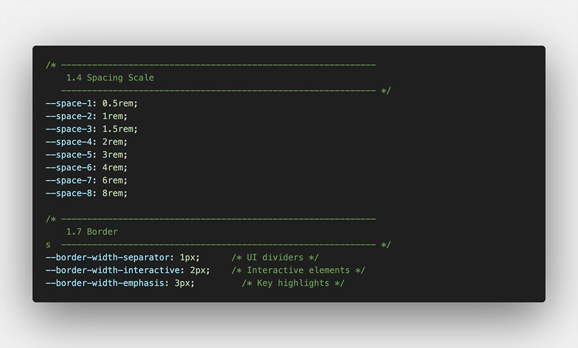
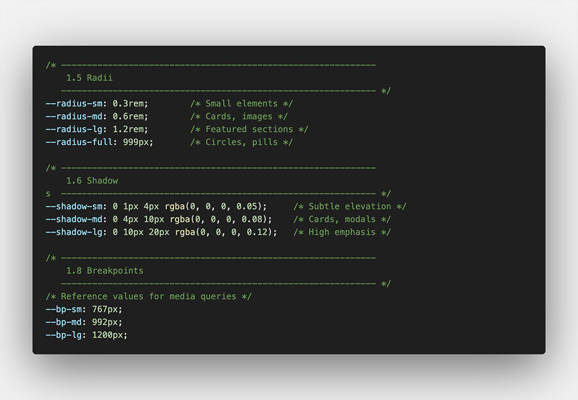
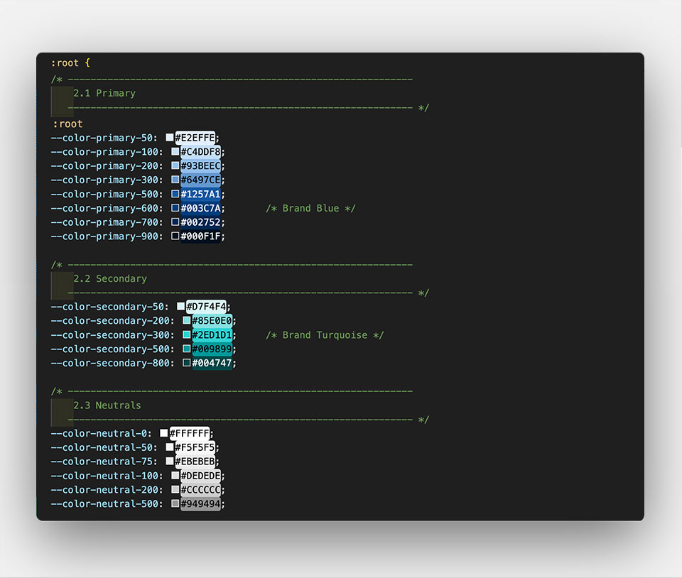
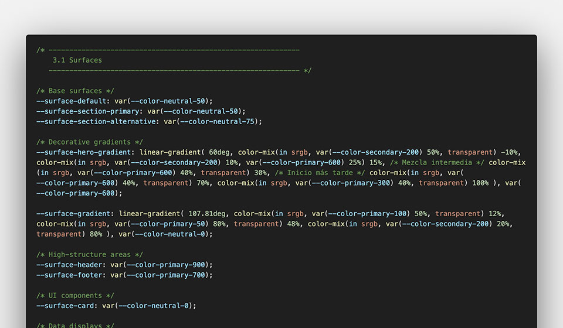
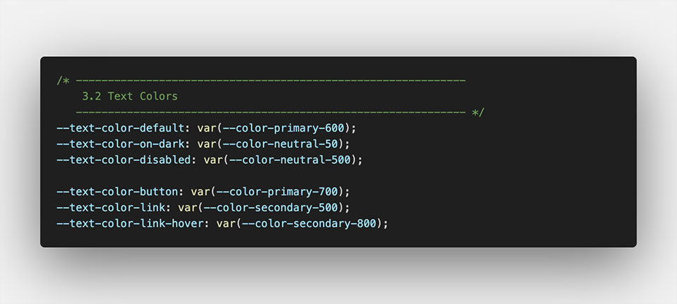
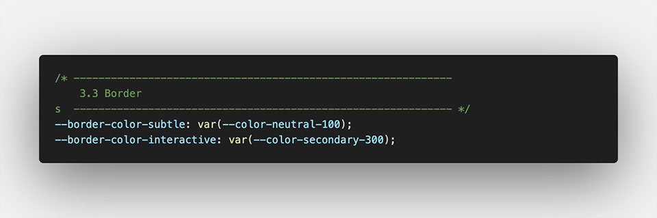

Design System for Academic Book
Website Design & Development for "Introduction to Automated Negotiation"
Project Overview
Introduction to Automated Negotiation is an academic book that explores negotiation systems, agent-based models, and computational strategies.
The authors needed a simple, modern website that presents the book, makes the downloadable resources easy to find and and can grow later with new chapters and interactive tools.
Even though the current version is a single-page site, I treated it like the foundation of a larger product. I built the entire visual identity, created a lightweight design system, and implemented the full responsive layout.
project goals
- Present academic content in a structured and easy-to-understand way.
- Offer an intuitive downloading experience.
- Build a scalable design system based on semantic tokens and reusable components.
- Meet WCAG AA accessibility standards.
- Create a responsive interface with a clean visual hierarchy.
- Introduce micro-interactions that support usability without distracting from the academic tone.
my role
UI & Design System Designer — Front-End Implementation
I led the project end-to-end:
- Defined the visual language and interaction patterns.
- Created the full design system using semantic and base tokens.
- Designed and built reusable components.
- Developed all responsive layouts.
- Ensured accessibility compliance through color contrast, semantics, and keyboard support.
- Translated static designs into a live experience.
1. UX Approach & Key Insights
To understand the needs of both the author and the students, I conducted conversations and feedback sessions. I learned that users needed quick access to the latest book version, a clear version history, and an immediate way to copy the BibTeX citation. These insights guided the design decisions:
- A prominent “Download v0.2” button in the hero for instant access.
- Version history presented as a table on desktop and adaptive cards on mobile.
- A BibTeX section with copy-to-clipboard, ARIA labels, focus states, and live confirmation.
- Consistent vertical rhythm to keep the academic content readable and distraction-free.
- Since the site works as a one-page flow, navigation scrolls to each section.

2. Navigation & Structure
The site is organized into seven clear sections, using surfaces and spacing tokens to create a smooth visual rhythm.
To support the one-page flow, the layout follows three key principles:
- A strong header band in the primary color frames the interface and anchors the navigation.
- A bold hero section sets the purpose of the site and guides users toward the next steps.
- Secondary sections remain simple to keep the academic content at the center.
These principles shaped how each part of the page is organized. The final structure is divided into
Hero Banner / Book Overview / Downloads / Citation / Contact & Feedback / Book versions / Author

3. UI design & visual language
The visual direction needed to balance academic seriousness with modern usability.
- >Primary color: deep blue → represents trust and research
- >Secondary color: turquoise → highlights interactions and active states
- >Neutral scale: gray → supports clean reading and accessible contrast
- >Rounded corners: soften the scientific tone
- >Shadows: minimal, used only where needed
- >Typography: Plus Jakarta Sans for a geometric, modern academic feel

4. Design Tokens & Foundations
This website is supported by a lightweight but robust token system. All components — buttons, cards, tables, spacing, interactions — come from this foundation.
Below is the full breakdown of what I built and why.
4.1 Foundations (Base Tokens)
I defined the fundamental values that control the entire UI: spacing, radii, shadows, breakpoints, typography rules, and line heights. These foundations make layouts predictable.
Font family & weights tokens
I defined a full type scale—from hero titles to labels—using CSS variables like --fs-heading-1, --fs-body, and --fs-small.
Line-height tokens
I created two spacing rules for readability: --line-height-base for paragraphs, --line-height-tight for titles and --line-height-relaxed for long text.
Type scale tokens
A responsive font size system from hero titles to small text, ensuring hierarchy and readability.

Spacing Scale Tokens
I built a spacing scale that covers from compact UI elements to large sections. For example, --space-1 and --space-2 work well for buttons and icons, while --space-5 and --space-6 handle section spacing, and --space-7 with --space-8 structure hero and footer areas.
Border Width Tokens
The system uses --border-width-separator (1px) for subtle dividers and outlines components that add structure without attracting attention. --border-width-interactive (2px) to make buttons to stand out on focus, improving accessibility. And and --border-width-strong (3px) for highlighted components and alerts.

Radii, shadow, media queries...
I defined radius tokens for different component families (small for buttons and inputs, medium for cards, and large for highlighted blocks).
Shadow tokens add subtle hierarchy without making the interface heavy. They are usable for different intents—cards, sticky elements, and interactive components.
Breakpoints tokens document the responsive breakpoints for design-dev alignment. Note: They're currently reference-only since CSS custom properties don't work in media queries.

4.2 Color Tokens (Raw Palette)
Instead of arbitrary colors, I created structured scales:
- >Primary (blues 50 → 900): Used for structure, titles and body text
- >Secondary (turquoise 50 → 800): Adds a more expressive, aqua-like accent. Used for interaction: hovers, active states, links.
- >Neutrals (0 → 200): Used for backgrounds, section alternation, table headers, and cards.
This structure gives the UI a clean tone while supporting AAA contrast where needed.

4.3 Semantic tokens
Semantic tokens translate raw values into meaningful roles used across the interface.
Instead of using raw color values, semantic tokens describe the purpose of a style — for example “surface”, “interactive”, or “subtle”.
I created several semantic categories:
Surface tokens
Surface tokens define background layers used across the interface. Used for sections, cards, headers, and gradients.
For example:
- --surface-section-primary and --surface-section-alt create a clean alternation pattern.
- --surface-hero-gradient and --surface-gradient give the site a unique visual identity using controlled color mixing.
- --surface-interactive-primary and its hover state ensure clear feedback on buttons.
There are others tokens for the high structured areas, components, etc but I don't want to make this text so long, so better check them out on my github.

Text tokens
Created for maximum readability:
- --text-color-primary for content
- --text-color-button with AAA contrast
- class="text">interactive colors for links and hover states
- --text-default for paragraphs
- --text-muted for secondary information
- --text-accent for the book's highlight color
- --text-on-dark for hero/contrast areas

Border tokens
Useful for dividers, tables, and interactive elements—ensuring borders feel consistent instead of arbitrary.

Interactive states
To ensure clear and consistent feedback across buttons, links, and interactive elements, I created tokens for:
Component architecture
Reusable modules built on our token system ensuring consistency and accessibility across all interface elements.
- >Buttons share the same focus states and interaction rules
- >Cards follow a consistent internal structure and spacing
- Tables adapt to mobile through a token-based responsive system
- Navigation is fully keyboard-accessible and screen-reader friendly
5. Accessibility
I followed a set of practical guidelines to make sure everyone can use the website comfortably.
Colour contrast
All colours follow WCAG AA contrast standards. Using tokens for text, surfaces, and interactive elements helps maintain consistent, accessible contrast across light and dark backgrounds.
Semantic structure
I built the page using meaningful HTML elements like <nav>, <header>, <section>, <table>, and <footer>. Clear titles and a consistent hierarchy help both users and assistive technologies understand how the content is organized.
Keyboard navigation & focus states
All interactive elements—buttons, links, the mobile menu, and the copy-to-clipboard action—are fully usable with a keyboard. I added visible focus rings based on design tokens so users always know where they are on the page.
Screen Reader Labels & ARIA
I included descriptive ARIA labels such as “Open menu”, “Close menu”, and “Copy BibTeX entry”. On mobile, where the version table becomes cards, additional labels ensure screen readers still communicate the information clearly.
6. Responsive Web Layout
Although the site is primarily desktop-first, I designed a flexible responsive system. The hero adapts for better readability, cards rearrange into grids or single-column layouts, and the version table becomes stacked cards on smaller screens. Navigation turns into an accessible mobile menu, ensuring the page remains functional across devices whenever needed.

7. Interaction design
Small micro-interactions support usability:
- >Buttons lift slightly on hover
- >Smooth transitions for the navigation menu
- >Copy button turns into a checkmark on success
- >Surfaces use subtle transparency via color-mix() for softer UI feedback
8. CSS Architecture - Client-friendly & maintainable
I designed a CSS structure that is clean, scalable, and easy for the client to maintain. Instead of a single large file or an overly complex system, I created a lightweight, modular architecture with clear responsibilities for each file. This makes updates safer, supports long-term growth, and allows non-technical users to adjust simple styles without breaking the layout.

9. Outcome
The result is a clean, accessible, and scalable website built with semantic HTML, custom CSS, and minimal JavaScript. A small design-token system for spacing, colour, and typography keeps the interface consistent and easy to maintain. Beyond being a single-page site, this project became a solid foundation for a growing academic resource.
10. What I Learned
This project reinforced three key ideas:
- >Consistent mathematical systems improve visual harmony
- >Designing for scale means thinking beyond immediate needs
- >A good design system prevents future problems before they appear